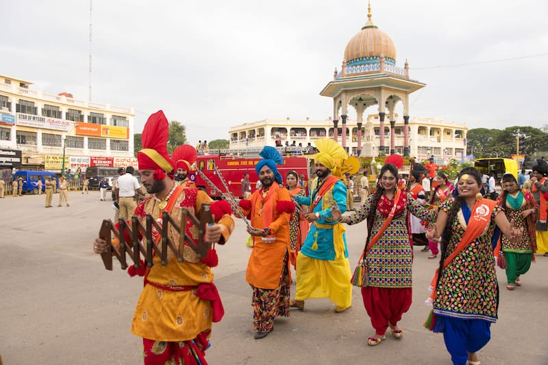
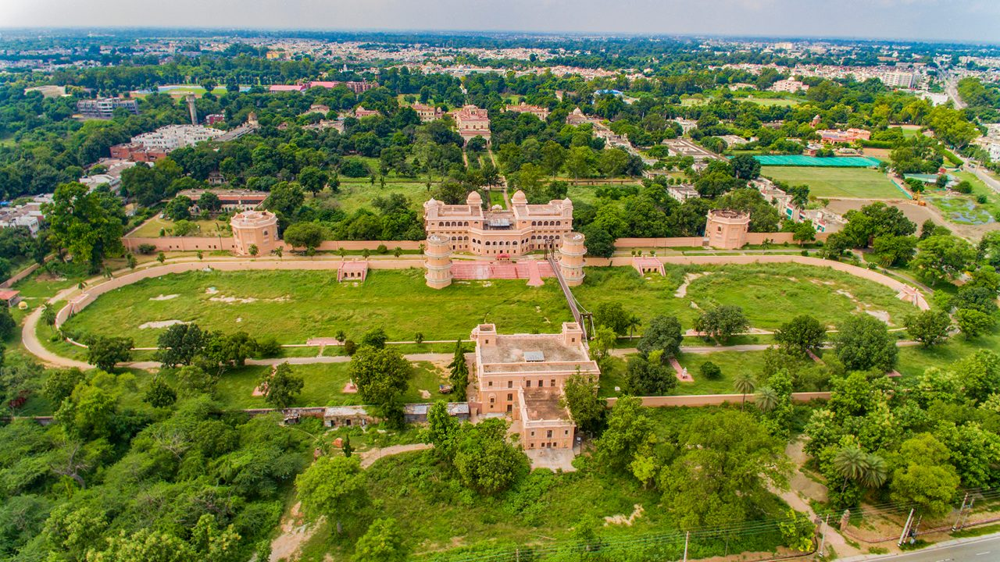
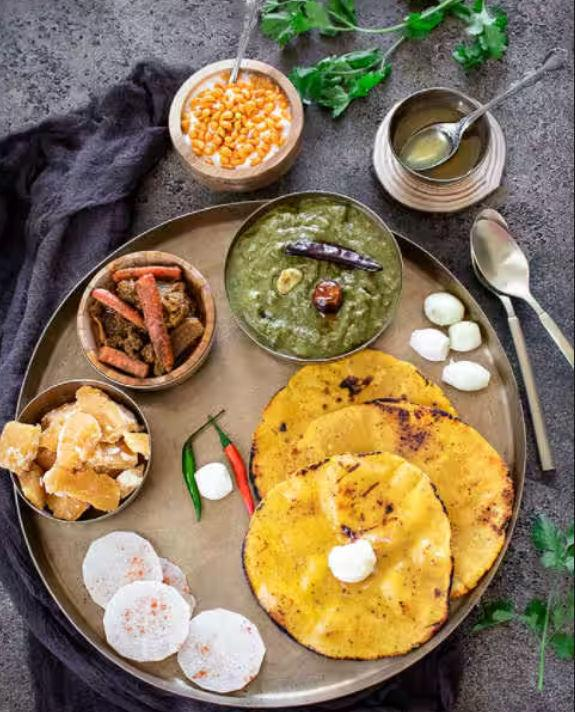

01
Amritsar
Spiritual soul of Sikhism — home to the Golden Temple, historical Jallianwala Bagh, Gobindgarh Fort, and patriotic Wagah Border.

Discover the land of five rivers, golden mustard fields, spiritual peace at Sri Harmandir Sahib, energetic Bhangra beats, and legendary Punjabi hospitality.
Explore Punjab ↓Punjab is the heartland of vibrant festivities, fertile agricultural plains, sacred Sikh history, and the timeless philosophy of universal brotherhood (Langar & Seva).
From the divine serenity of the Golden Temple in Amritsar and patriotic energy of the Attari-Wagah border to the royal palaces of Patiala and modern urban planning of Chandigarh, Punjab welcomes every explorer with open arms.
Iconic historical landmarks, sacred shrines, and cultural hubs across Punjab.
Spiritual soul of Sikhism — home to the Golden Temple, historical Jallianwala Bagh, Gobindgarh Fort, and patriotic Wagah Border.

The City Beautiful — designed by Le Corbusier, famous for Nek Chand's Rock Garden, Sukhna Lake, and rose gardens.

Manchester of India — bustling commercial and agricultural hub known for Lodhi Fort, rural museums, and shopping markets.

Royal cultural city renowned for Qila Mubarak palace complex, Sheesh Mahal, handcrafted Phulkari embroidery, and Patiala Shahi turbans.
Punjabi cuisine is world-renowned for its rich ghee and butter gravies, rustic clay tandoor cooking, freshly churned dairy, and robust flavours.

High-energy harvest folk dances driven by thunderous Dhol beats, colorful turbans, and poetic Boliyan verses.
Joyous winter bonfires of Lohri and springtime harvest celebrations of Vaisakhi marking the birth of Khalsa.
Intricate floral silk thread hand-embroidery on woven cotton dupattas, passed as family heirlooms across generations.
Sacred Gurdwaras representing five Takhts, selfless 24x7 community kitchens (Langar), and martial traditions of Gatka.
Discover all 28 states, local food specialties, and centuries of living traditions.
← Back to All States